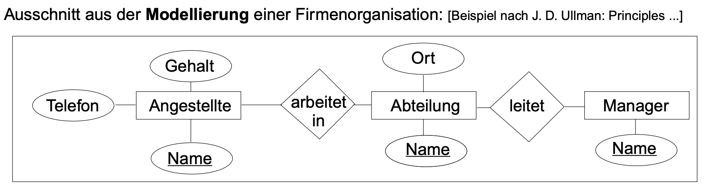
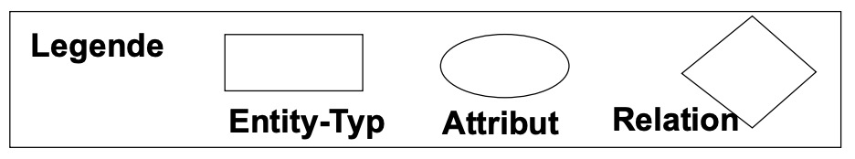

Was ist ein ER-Diagramm?:
Ein ER-Diagramm (Entity-Relationship-Diagramm) ist eine grafische Darstellung von Datenmodellen, die dazu dient, die Entitäten und Beziehungen zwischen diesen Entitäten in einer Datenbank zu visualisieren.
Entitäten: Objekt des Aufgabenbereiches
Attribut: Beschreibt ein Eigenschaft eines Objektes durch einen Wert
Relation: Beziehung zwischen Objekten

